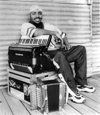

Lil' Brian & The Zydeco Travellers

{kind=link}
Территория проживания "Funky Nation" – маленькие провинциальные города Техаса, где еще живы традиции, унаследованные от креольской культуры. Большинство носителей этой культуры были родом из Луизианы; отсюда достаточно прочная связь и сходство в музыкальных вкусах жителей двух штатов. Клубы, радиостанции и фестивали пропагандируют этот необычный стиль, в котором элементы старины переплетаются с нововведениями.
В этом маленьком мире последние десять лет Lil’ Brian & The Zydeco Travellers имеют статус исполнителей самой интересной и замысловатой музыки. При ощутимом уважении к традициям, они привнесли в музыку zydeco звуки, характерные для жизни черного городского населения. Тексты песен непросты, а ритмический рисунок можно считать изощренным; но при этом в песнях присутствует драйв, характерный в первую очередь для музыки фанк. Сокращения ради стиль получил название "Z-Funk".
27-летний Lil’ Brian великолепно владеет аккордеоном. Он стремится доказать, что этот инструмент может быть настолько же актуальным в современной музыке, как и все остальные. «В музыке нет ограничений. Мне нравятся традиции, но, слушая современную музыку, я стараюсь передать в игре свое понимание сегодняшнего дня».
Впервые он взял в руки аккордеон в 13 лет. Никто тогда не подозревал, что друг семьи, Stanley Dural, всячески ободрявший подростка в его стремлениях, через несколько лет станет продюсером его пластинки. Хотя в семье Брайана уже были музыканты – родственники из Луизианы, которых он навещал на каникулах. При полной поддержке семейства Lil’ Brian собрал свой первый бэнд, который концертировал по окрестным клубам.
Нельзя не сказать об остальных участниках коллектива. Гитарист Patrick "Heavy" Terry, помимо музыки, пишет песни (в частности, немалая часть материала с последнего альбома принадлежит ему). Его соло добавляют в звучание группы такие оттенки, которых невозможно было бы добиться, играя традиционную музыку. Emerson Jackson играет на басу с такой виртуозностью, которая иногда просто недоступна для понимания. И, наконец, барабанщик, 20-летний Tony Stewart играет обычно с той энергией, которая свойственна молодости. Но все же отметим, что он считается не по годам серьезным музыкантом.